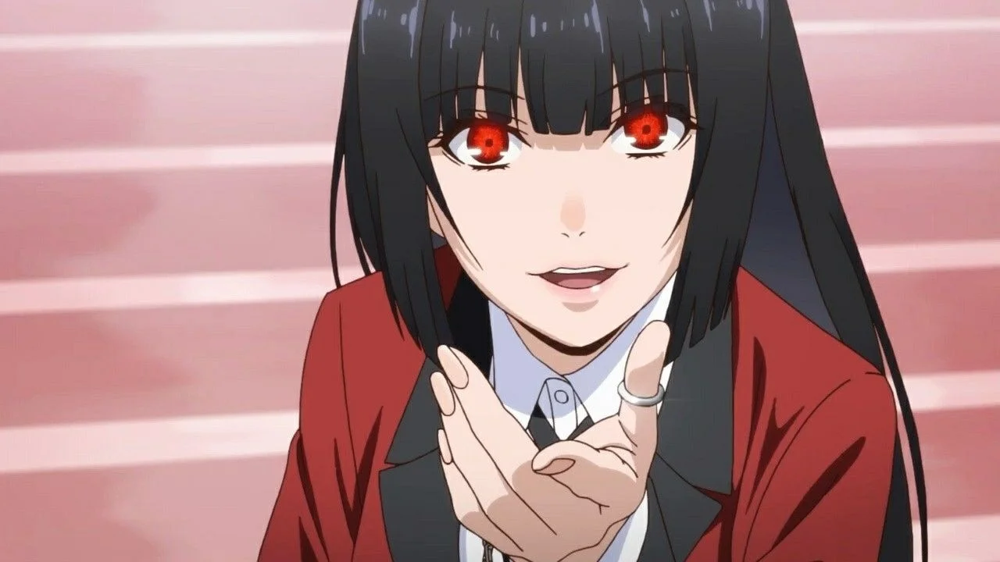
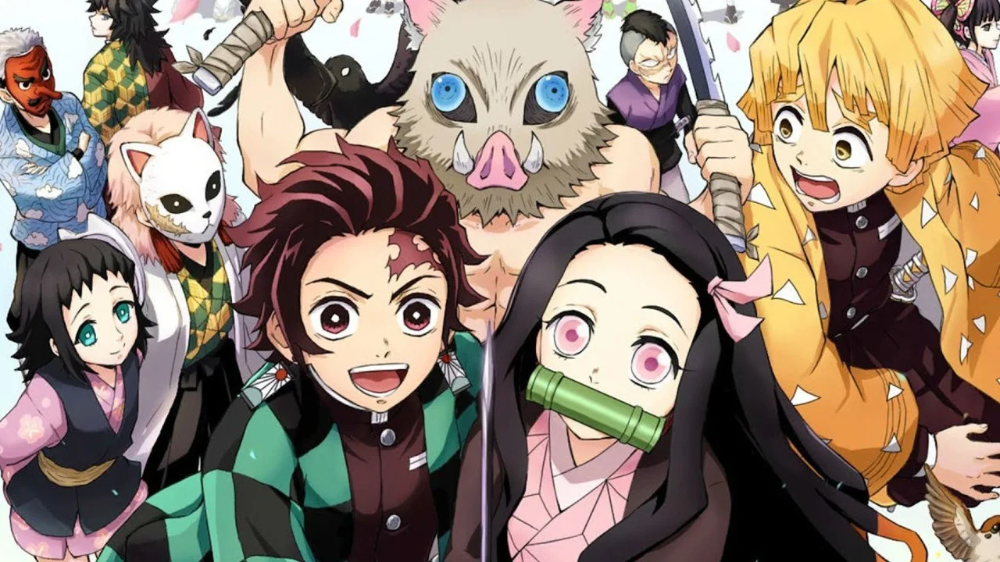

 En un Japón feudal del futuro invadido por alienígenas y donde se ha prohibido la profesión de samurai, encontramos a los miembros de la Yorozuya: un exsamurai, una yato y un chico con gafas. Este anime, que tiene su origen en un popular manga publicado en la Shonen Jump, mezcla el humor con el drama de forma magistral, dando lugar a algunos de los momentos más hilarantes, memorables surrealistas y épicos de la industria. Con un total de 367 episodios (unos más animados que otros), Gintama ofrece cientos de horas de diversión y un plantel de personajes de lo más variados que se han ganado un hueco en el corazón de muchísimos aficionados.
 Es el shonen que está causando furor desde su en la temporada de invierno de 2020. Una serie con un ritmo increíble, unos personajes que derrochan carisma por cada píxel una trama que combina el humor con los combates contra maldiciones de una forma magnífica. Además, su animación acompaña el ritmo de la trama, haciendo que ver esta serie sea una experiencia de lo más satisfactoria. Todavía está en emisión, y su primera temporada finalizará cuando alcance los 24 episodios.